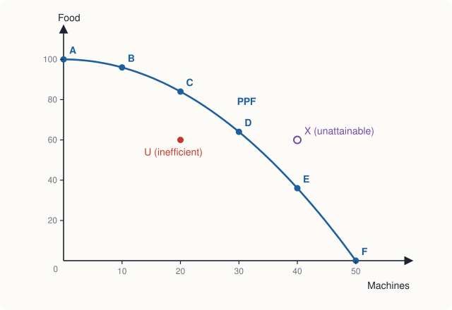

Chapter 1: Scarcity, Choice and Opportunity Cost¶
Why every choice has a cost, and how economists think about it
Learning outcomes
After studying this chapter you should be able to:
- Explain what economics studies and why scarcity forces choice.
- Distinguish microeconomics from macroeconomics, and positive from normative statements.
- Name the factors of production and the payment each one earns.
- Measure the opportunity cost of a decision, including costs that involve no payment.
- Draw and interpret a production possibility frontier, and explain why it is usually bowed outwards.
- Use marginal reasoning to make a decision, and explain why sunk costs should be ignored.
- Describe the circular flow of an economy and the role of models in economics.
1.1 What economics studies¶
Human wants have no natural limit. A family that can afford a bicycle would like a motorcycle; a town with a primary school would like a college and a hospital; a country with electricity in its cities would like it in every village, at every hour. The resources available to satisfy those wants, on the other hand, are limited at any moment: there is only so much land, so many hours of work, so many machines and so much knowledge. This gap between unlimited wants and limited resources is called scarcity.
Scarcity does not mean that a thing is rare. Rice is not rare, but it is scarce, because producing more rice uses land, water, labour and fertiliser that could have produced something else, and because people would take more of it if it were free. A good is scarce whenever it is not available in the quantity people would want at a zero price. The air we breathe in the open is one of the few things that is not scarce in this sense.
Because resources are scarce, every individual, firm and society must choose: which wants to satisfy and which to leave unsatisfied. Economics is the study of how people make choices under scarcity, and of the consequences of those choices. A farmer choosing between wheat and mustard, a student choosing between a job and further study, a firm choosing between hiring workers and buying machines, and a government choosing between roads and schools are all solving the same kind of problem.
Every society has to answer three basic questions:
- What to produce, and in what quantities?
- How to produce it: with which combination of labour, machines and land, and with which technology?
- For whom to produce it: how is the output shared among the people?
Different economies answer these questions in different ways, as Section 1.7 explains. But no economy can escape them.
Microeconomics and macroeconomics¶
Economics is usually divided into two branches.
- Microeconomics studies the decisions of individual units (households, workers, firms) and how they interact in particular markets: the market for onions, for smartphones, for software engineers, for rented flats. It asks how prices are set, how much is produced, and who gets it.
- Macroeconomics studies the economy as a whole: total output (gross domestic product), unemployment, inflation, economic growth, and the policies of the government and the central bank that affect them.
The two are connected, since the economy as a whole is made of individual decisions. This book is about microeconomics.
Positive and normative statements¶
Economists make two kinds of statement.
- A positive statement describes how the world is, or predicts how it would be. It can, at least in principle, be tested against evidence. "If the price of petrol rises, people will buy less petrol" is positive.
- A normative statement says how the world ought to be. It rests on values as well as facts. "The government should keep the price of petrol low" is normative.
Economists disagree about normative questions for the same reasons as anyone else: people hold different values. Much of the disagreement that looks like it is about economics is really about values. Positive economics can tell you what a policy is likely to do, and who gains and who loses; it cannot by itself tell you whether those gains are worth those losses.
Caution
A statement is not normative just because it sounds like an opinion, nor positive just because it sounds scientific. "A minimum wage raises unemployment among young workers" is positive, even though it may be false and is often disputed: it is a claim about what happens, which evidence can test. "A minimum wage is unfair to employers" is normative.
1.2 Resources: the factors of production¶
The resources used to produce goods and services are called factors of production (or inputs). Economists group them into four kinds.
| Factor | What it is | Examples | Payment it earns |
|---|---|---|---|
| Land | Natural resources, in the broadest sense | farmland, forests, minerals, water, the radio spectrum | rent |
| Labour | Human effort, physical and mental | a mason's work, a nurse's skill, a programmer's time | wages |
| Capital | Produced goods used to produce other goods | tools, machines, buildings, roads, computers | interest |
| Entrepreneurship | Organising the other factors and bearing the risk of a business | starting a bakery, launching a new app | profit |
Table 1.1. The four factors of production and their payments.
Two points about this table are often misunderstood.
First, capital in economics means physical capital, things made by people that are used in production. Money in a bank account is not capital in this sense; it is a claim that can be used to buy capital. Economists also speak of human capital, the knowledge and skills that people acquire through education and training, because like a machine it is built up at a cost and then yields a return over many years. Chapter 11 returns to it.
Second, the payments in the last column are the incomes of the people who own the factors. Every rupee that a firm spends on production becomes someone's income: wages for workers, rent for landowners, interest for those who lent the capital, and profit for the entrepreneur. This is the link between production and income that the circular flow of Section 1.7 shows.
1.3 Opportunity cost¶
Because resources are scarce, choosing one thing means giving up another. The opportunity cost of a choice is the value of the best alternative given up to make it.
The word best matters. If you have an evening free and you could study, watch a film or work a paid shift, and you choose to study, the opportunity cost of studying is whichever of the other two you would have chosen next, not both of them. You could not have done both in the same evening anyway.
Costs that involve no payment¶
Opportunity cost includes costs for which nobody sends a bill. The most important of these is time.
Example 1.1 The cost of a weekend course
Riya is offered a Saturday course in data analysis. The fee is ₹500 for the day. If she does not take the course, the best thing she could do with her Saturday is work a shift in a café, which pays ₹800 for the day. Travel to the course costs ₹60; travel to the café would also cost ₹60. What is the opportunity cost of the course?
Solution. The course costs her the fee, ₹500, plus the wage she gives up, ₹800. The travel cost is the same whichever she chooses, so it is not a cost of the course: it is paid either way.
The course is worth taking only if Riya values what she will learn at more than ₹1,300. Someone who looked only at the fee would think it cost ₹500 and would underestimate its cost by more than half.
The same reasoning explains why the cost of attending university is much more than the fees. For many students the largest cost is the income they could have earned by working instead. It also explains why the time of a busy surgeon is expensive, and why people with high wages are more willing to pay for things that save time.
Opportunity cost for a society¶
A society faces opportunity costs too. Land used for a new airport cannot grow crops; engineers employed to build roads cannot build railway lines at the same time; money the government spends on defence cannot be spent on health. When a government announces that a project "costs" a certain sum, the real cost is what else that sum, and the resources it buys, could have produced.
Key idea
The cost of anything is what you give up to get it. To measure it, ask: what is the best thing I would have done instead? Include the value of time and of other resources you already own, and leave out costs that are paid whichever choice you make.
1.4 The production possibility frontier¶
A simple model shows scarcity, choice and opportunity cost in one picture. Imagine an economy that produces only two goods, food and machines, with a fixed quantity of resources and a given technology. The production possibility frontier (PPF) shows the maximum combinations of the two goods the economy can produce when it uses all its resources efficiently.
Suppose the possibilities are those in Table 1.2. If all resources make food, the economy produces 100 units of food and no machines (point A). If all make machines, it produces 50 machines and no food (point F). In between are other combinations.
| Point | Machines | Food | Food given up for the last 10 machines | Opportunity cost of one machine (in food) |
|---|---|---|---|---|
| A | 0 | 100 | ||
| B | 10 | 96 | 4 | 0.4 |
| C | 20 | 84 | 12 | 1.2 |
| D | 30 | 64 | 20 | 2.0 |
| E | 40 | 36 | 28 | 2.8 |
| F | 50 | 0 | 36 | 3.6 |
Table 1.2. Production possibilities of a two-good economy.

The frontier in Figure 1.1 illustrates four ideas.
Scarcity. Points outside the frontier, such as X (40 machines and 60 units of food), cannot be produced with the present resources and technology. With 40 machines the most food the economy can produce is 36.
Efficiency. Points on the frontier are efficient: it is impossible to produce more of one good without producing less of the other. A point inside the frontier, such as U (20 machines and 60 units of food), is inefficient. Some resources are idle (unemployed workers, unused factories) or badly used. Moving from U to C gives 24 more units of food with no fewer machines.
Opportunity cost. Moving along the frontier from one efficient point to another means giving up some of one good to get more of the other. The opportunity cost of a machine is the food given up, and it is measured by the slope of the frontier.
Increasing opportunity cost. The frontier is bowed outwards (concave to the origin), and the last column of Table 1.2 shows why. The first 10 machines cost only 4 units of food, 0.4 units each; the last 10 cost 36 units, 3.6 units each. The reason is that resources are not equally suited to both goods. When the economy first shifts towards machines, it moves the resources that are best at making machines and worst at farming: a skilled machinist who was a poor farmer. As it produces more and more machines, it has to take fertile land and experienced farmers out of agriculture, and each extra machine costs more food.
Example 1.2 Reading opportunity cost from the frontier
The economy of Table 1.2 is at point C and wants 10 more machines. What does it give up? If instead it were at point D, what would 10 more machines cost?
Solution. From C (20 machines, 84 food) to D (30 machines, 64 food), food falls by \(84 - 64 = 20\) units, so 10 machines cost 20 units of food, or 2 units per machine. From D to E, food falls by \(64 - 36 = 28\) units, so 10 more machines cost 28 units of food, or 2.8 units per machine. The cost rises as the economy specialises further in machines.
Note: when the frontier is a straight line
If resources were equally good at producing both goods, the opportunity cost would be the same at every point and the frontier would be a straight line. Chapter 14 uses straight-line frontiers of this kind to explain comparative advantage and trade.
Shifts of the frontier: economic growth¶
The frontier is drawn for given resources and technology. If the economy acquires more resources (a larger, healthier or better-educated labour force, more capital) or better technology, it can produce more of both goods, and the frontier shifts outwards. This is economic growth. A point such as X, unattainable today, may become attainable later.
The choice between goods matters for growth. An economy that produces more capital goods today (machines, roads, power stations), and so fewer consumer goods, gives up some present consumption; in return its frontier will shift out further in the future. The opportunity cost of faster growth is consumption forgone now.
A frontier can also shift outwards for only one good. An improvement in farming technology, such as better seeds, raises the maximum output of food but not of machines: the frontier pivots outwards along the food axis.
1.5 Thinking at the margin¶
Most economic decisions are not all-or-nothing. A student does not choose between studying and never studying; she chooses whether to study one more hour. A firm does not choose between producing and not producing; it chooses whether to produce a little more or a little less. Economists call these small, incremental changes marginal changes, and the method of comparing their benefits and costs marginal analysis.
- The marginal benefit of an action is the extra benefit from doing one more unit of it.
- The marginal cost is the extra cost of doing one more unit.
The rule is simple: keep doing more of an activity as long as its marginal benefit is greater than its marginal cost, and stop where they become equal. If the marginal benefit of the next unit is greater than its marginal cost, doing it adds more to benefits than to costs, so the net benefit rises. If the marginal benefit is less, doing it reduces the net benefit.
Example 1.3 How much fertiliser?
A farmer can apply bags of fertiliser to a field. Each bag costs ₹400. The extra revenue from the extra crop that each bag produces is shown below. How many bags should she use?
| Bag | Extra revenue (marginal benefit, ₹) | Cost of the bag (marginal cost, ₹) | Net gain from this bag (₹) |
|---|---|---|---|
| 1st | 900 | 400 | 500 |
| 2nd | 700 | 400 | 300 |
| 3rd | 500 | 400 | 100 |
| 4th | 300 | 400 | −100 |
| 5th | 100 | 400 | −300 |
Solution. The first three bags each add more to revenue than to cost. The fourth adds ₹300 of revenue at a cost of ₹400, so it reduces the farmer's net gain. She should use three bags. Her total net gain is \(500 + 300 + 100 = 900\) rupees. With four bags it would be \(900 - 100 = 800\) rupees.
Notice that the marginal benefit falls as she adds more fertiliser. This is common: the first units of an input or a good usually do the most good. Later chapters meet the same pattern as diminishing marginal utility (Chapter 5) and diminishing marginal returns (Chapter 7).
Sunk costs¶
A sunk cost is a cost that has already been incurred and cannot be recovered whatever you do now. Because it is the same whichever choice you make, a sunk cost should not affect a decision. Only costs and benefits that still depend on the choice matter.
Suppose you have paid ₹300 for a non-refundable ticket to a film and, on the evening, you feel unwell and would rather stay home. The ₹300 is gone whether you go or not. The right question is: from now on, is going to the film better than staying home? If not, stay home. Going "so as not to waste the money" adds a bad evening to the lost money. People often find this hard, and Chapter 13 discusses why; but the logic is clear. A firm that has spent crores on a project that is now failing should ask whether finishing it is worth the remaining cost, not how much has already been spent.
Common mistake
Do not confuse a sunk cost with a fixed cost. A fixed cost (such as the rent of a shop for the coming year) does not vary with output, but it may still be avoidable, for example by not renewing the lease. A sunk cost cannot be avoided at all. Chapter 7 returns to this distinction.
1.6 Incentives and trade-offs¶
Because people compare benefits and costs, they respond to incentives: when the benefit or cost of an action changes, their behaviour changes. When the price of tomatoes rises sharply, households buy fewer and use substitutes; farmers plant more the next season. When a city raises parking charges in a crowded market, fewer people drive there. When a government gives a subsidy for solar panels, more households install them.
Incentives sometimes work in unintended ways, and much of the craft of economics lies in tracing them through. A rule that limits the rent a landlord can charge, for instance, helps tenants who already have a flat, but it also reduces landlords' incentive to maintain and build rented housing, so that new tenants may find it harder to get a flat at all. Chapter 4 studies such price controls in detail.
Behind every incentive is a trade-off. A society that wants cleaner air must accept higher costs of production or less of some goods; a worker who wants more leisure must accept less income; a government that wants more equal incomes may, depending on how it pursues that goal, reduce the incentive to work and invest. Economics does not say which side of a trade-off to choose. It tries to make the trade-off clear.
1.7 How economies are organised¶
Every economy must decide what, how and for whom to produce. Broadly, there are two ways of doing it.
- In a market economy, the decisions are made by millions of households and firms, each pursuing its own interests, and coordinated by prices in markets. Nobody decides how many shirts a country will produce; the number results from the decisions of buyers and sellers. Resources are mostly privately owned.
- In a command economy, the decisions are made by a central authority, usually the government, which owns most resources and sets production targets and prices.
Every real economy is a mixed economy, combining markets with a role for the state. Governments enforce property rights and contracts, provide public goods such as defence and street lighting, regulate monopolies and pollution, and redistribute income through taxes and transfers. The mix differs between countries and changes over time. India, for example, has moved since 1991 towards a larger role for markets in many industries, while the state continues to play a large part in areas such as infrastructure, health, education and food security.
One of the central insights of economics is that markets can coordinate the decisions of very many people without anyone being in charge. A price is a signal and an incentive at once. If a frost destroys much of the orange crop, the price of oranges rises; buyers who can most easily do without oranges buy fewer, and growers elsewhere are encouraged to send more. Nobody needs to know about the frost for the response to happen. Chapters 2 and 8 explain how this works, and Chapter 12 explains when it fails.
The circular flow¶
The circular flow diagram is a simple picture of a market economy. There are two kinds of decision-maker, households and firms, and two kinds of market.
- In markets for goods and services, households buy and firms sell. Goods and services flow from firms to households; spending flows from households to firms.
- In markets for factors of production, households sell and firms buy. Households own labour, land and capital, and sell their services to firms; firms pay wages, rent, interest and profit to households.
flowchart LR
H[Households] -- "spending on goods and services" --> GM[Markets for goods and services]
GM -- "revenue" --> F[Firms]
F -- "goods and services sold" --> GM
GM -- "goods and services bought" --> H
H -- "labour, land, capital" --> FM[Markets for factors of production]
FM -- "inputs" --> F
F -- "wages, rent, interest, profit" --> FM
FM -- "income" --> H
The diagram leaves out the government, the banks and trade with other countries, which a fuller model adds. Even in this simple form, it shows that spending by one group is income for another, and that the markets for goods and the markets for factors are linked.
1.8 Models and graphs¶
The economy is far too complicated to study all at once, so economists, like other scientists, use models: simplified descriptions that keep the features that matter for a question and leave out the rest. The production possibility frontier is a model; so is the circular flow. A map is a good comparison. A road map leaves out trees and buildings, which is exactly what makes it useful for driving. A model is judged by whether it helps to explain and predict, not by whether it is realistic in every detail.
Two habits run through economic models.
Assumptions. Models make assumptions to keep things simple: two goods instead of thousands, or buyers who know the prices in the market. A good model makes assumptions that do not change the answer to the question being asked. When a conclusion depends on an assumption, economists check what happens if the assumption is relaxed.
Ceteris paribus. This Latin phrase means "other things being equal". When economists say that a rise in the price of tea reduces the quantity of tea demanded, they mean if nothing else changes at the same time: not incomes, not the price of coffee, not tastes. In the real world many things change at once; the phrase reminds us to consider the effect of one change at a time.
Reading a graph¶
Economics uses graphs constantly, and a few conventions are worth fixing now.
- The horizontal axis usually shows a quantity and the vertical axis a price or cost. This is the reverse of the convention in mathematics, where the variable that "causes" (the independent variable) goes on the horizontal axis. It is a historical habit, and you will soon be used to it.
- The slope of a line is the change in the vertical variable divided by the change in the horizontal variable between two points: "rise over run".
A line that falls from left to right has a negative slope; one that rises has a positive slope. For a straight line the slope is the same everywhere; for a curve it changes, and at any point it equals the slope of the tangent there.
Example 1.4 The slope of a straight line
A straight line passes through the points \((Q, P) = (20, 40)\) and \((60, 20)\). Find its slope and its equation.
Solution. The slope is
A line with slope \(-\tfrac{1}{2}\) is \(P = a - \tfrac{1}{2}Q\). Substituting the point \((20, 40)\) gives \(40 = a - 10\), so \(a = 50\). The line is \(P = 50 - \tfrac{1}{2}Q\). Check with the other point: \(50 - \tfrac{1}{2}(60) = 20\). This line is the demand curve of the next chapter.
Tip
When you draw a diagram in an answer, always label both axes, label every curve, and mark the important points (an equilibrium, an intercept) with their values. An unlabelled diagram earns little credit and, worse, is easy to misread yourself.
1.9 Summary¶
- Scarcity means that resources are too limited to satisfy all wants, so choices must be made. Economics studies those choices and their consequences.
- Microeconomics studies individual households, firms and markets; macroeconomics studies the economy as a whole. Positive statements describe what is; normative statements say what ought to be.
- The factors of production are land, labour, capital and entrepreneurship; they earn rent, wages, interest and profit.
- The opportunity cost of a choice is the value of the best alternative given up. It includes the value of time and leaves out costs paid whichever choice is made.
- The production possibility frontier shows the maximum combinations of two goods an economy can produce. Points on it are efficient; points inside are inefficient; points outside are unattainable. It is usually bowed outwards because of increasing opportunity cost, and it shifts out with economic growth.
- Rational decisions are made at the margin: do more of an activity while its marginal benefit exceeds its marginal cost. Sunk costs should be ignored.
- People respond to incentives, sometimes in unintended ways.
- Economies may be organised by markets, by command or, in practice, by a mixture. The circular flow links markets for goods and markets for factors.
- Economists use models built on simplifying assumptions and study one change at a time (ceteris paribus).
1.10 Exercises¶
Exercise 1
Classify each statement as positive or normative. (a) Raising the tax on cigarettes will reduce smoking. (b) The government should spend more on primary education. (c) Prices of vegetables rose faster than other prices last year. (d) Farmers deserve higher incomes.
Answer
(a) Positive: a testable prediction. (b) Normative: it says what should be done. (c) Positive: a statement of fact that can be checked against data. (d) Normative: "deserve" is a value judgement.
Exercise 2
Arjun has a job that pays ₹30,000 a month. He is thinking of leaving it for a one-year full-time course with fees of ₹1,20,000. He would buy books costing ₹10,000. He lives at home and would continue to do so whether he studies or works, at a cost to the family of ₹8,000 a month for food. What is the opportunity cost of the year of study?
Answer
Forgone earnings are \(12 \times 30{,}000 = 3{,}60{,}000\) rupees. Add the fees, ₹1,20,000, and the books, ₹10,000. Food is paid whether he studies or works, so it is not part of the cost of studying. The opportunity cost is \(3{,}60{,}000 + 1{,}20{,}000 + 10{,}000 =\) ₹4,90,000.
Exercise 3
Using Table 1.2, find the opportunity cost of one more machine when the economy moves from B to C, and the opportunity cost of one more unit of food when it moves from E to D.
Answer
From B to C, food falls from 96 to 84, so 10 machines cost 12 units of food: 1.2 units of food per machine. From E to D, food rises from 36 to 64 (28 units) and machines fall from 40 to 30 (10 machines), so one unit of food costs \(10/28 \approx\) 0.36 machines.
Exercise 4
Explain, with a sketch, what happens to a country's production possibility frontier (a) if a new irrigation scheme raises crop yields, (b) if an earthquake destroys many factories, and (c) if unemployment rises.
Answer
(a) The frontier pivots outwards along the food axis: the maximum output of food rises, the maximum output of other goods does not. (b) The frontier shifts inwards, mostly along the axis of manufactured goods, because capital has been destroyed. (c) The frontier does not move. Unemployment means the economy produces at a point inside the frontier, because existing resources are idle.
Exercise 5
A shop is open 8 hours a day. Opening one more hour would bring extra sales revenue of ₹1,500 and extra costs (wages, electricity, the cost of the goods sold) of ₹1,200. The shop paid ₹50,000 for its fittings last year. Should it open the extra hour? Does the ₹50,000 matter?
Answer
Yes. The marginal benefit (₹1,500) exceeds the marginal cost (₹1,200), so the extra hour adds ₹300 to profit. The ₹50,000 spent on fittings is a sunk cost; it is the same whether or not the shop opens the extra hour, so it does not affect the decision.
Exercise 6
Why is the production possibility frontier usually drawn bowed outwards rather than as a straight line? Under what condition would it be straight?
Answer
Because resources are specialised: some are better at producing one good than the other. As the economy produces more of one good, it must use resources that are less and less suited to it, so the opportunity cost of each extra unit rises. The frontier would be a straight line if all resources were equally productive in both uses, so that the opportunity cost was constant.
Exercise 7
A straight line passes through \((Q, P) = (0, 5)\) and \((40, 15)\). Find its slope and its equation.
Answer
Slope \(= (15 - 5)/(40 - 0) = 10/40 =\) 0.25. The intercept is 5, so the line is \(P = 5 + 0.25Q\). It is the supply curve used in Chapter 2.
1.11 Quiz¶
Check your understanding of Chapter 1
Exercise 1
Which of the following is a normative statement?
- A rise in bus fares reduces the number of passengers.
- The unemployment rate fell last year.
- Bus fares should be lowered to help the poor.
- Higher interest rates reduce borrowing.
Answer
Bus fares should be lowered to help the poor.
Exercise 2
The payment earned by the owner of capital is called
- rent
- wages
- interest
- profit
Answer
interest
Exercise 3
You give up a shift paying ₹700 to attend a free workshop, and would have spent ₹50 on travel either way. What is the opportunity cost of the workshop, in rupees?
Answer
700 / ₹700 / Rs 700
The travel cost is paid whichever you choose, so only the forgone wage counts.
Exercise 4
A point inside the production possibility frontier shows
- an unattainable combination
- an efficient combination
- an inefficient combination, with some resources idle or badly used
- economic growth
Answer
an inefficient combination, with some resources idle or badly used
Exercise 5
The production possibility frontier is bowed outwards because
- resources are unlimited
- opportunity cost rises as more of one good is produced
- opportunity cost is constant
- technology is fixed
Answer
opportunity cost rises as more of one good is produced
Exercise 6
A firm has spent ₹10 lakh on a project. Finishing it will cost ₹4 lakh more and bring in ₹3 lakh. What should it do?
- Finish it, because ₹10 lakh has already been spent
- Abandon it, because the remaining cost exceeds the remaining benefit
- Finish it, because total benefits exceed zero
- It cannot be decided without knowing the fixed costs
Answer
Abandon it, because the remaining cost exceeds the remaining benefit
The ₹10 lakh is sunk. Going on costs ₹4 lakh and brings ₹3 lakh, a loss of ₹1 lakh.
Exercise 7
Match each factor of production with its payment.
| A | B |
|---|---|
| Land | interest |
| Labour | profit |
| Capital | rent |
| Entrepreneurship | wages |
Answer
Land — rent; Labour — wages; Capital — interest; Entrepreneurship — profit